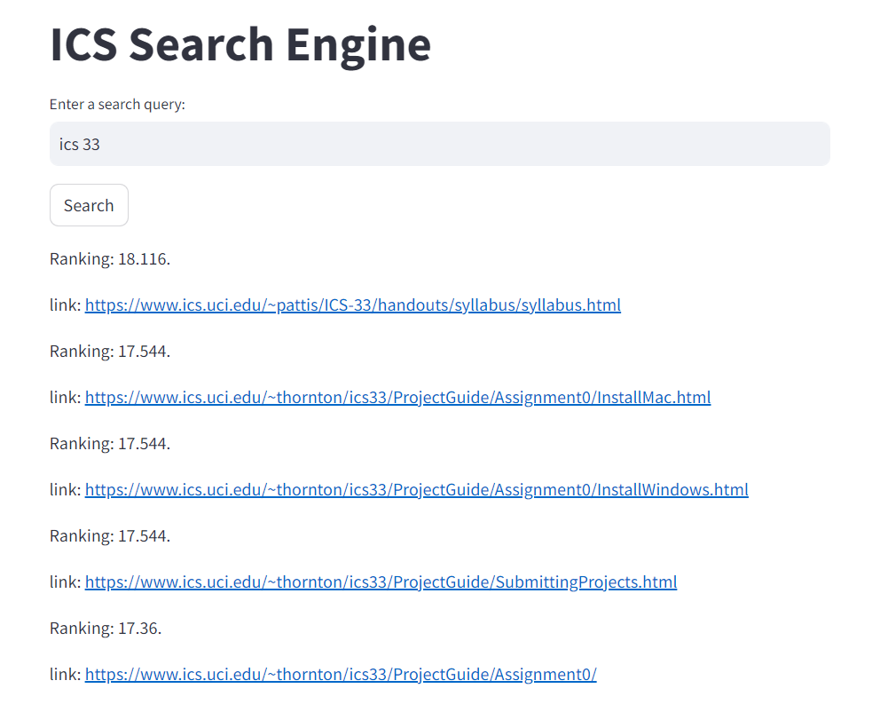
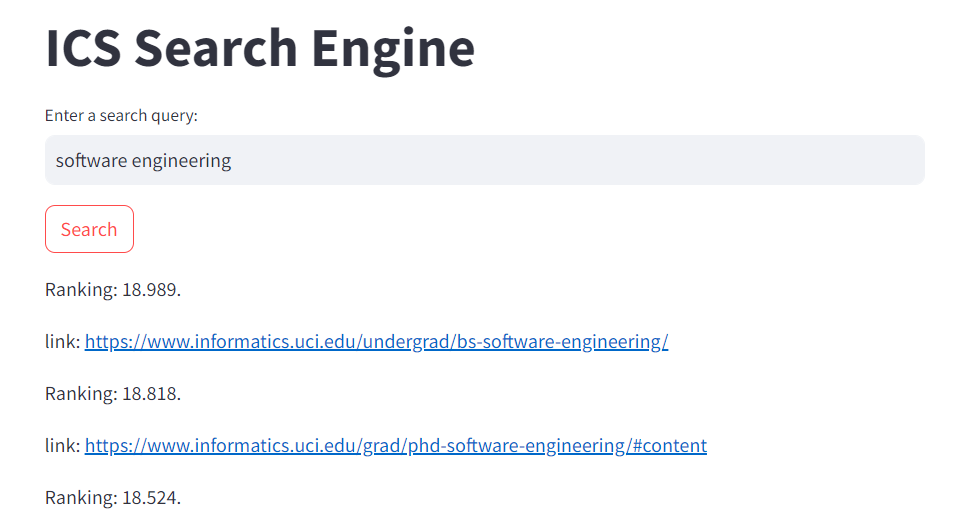
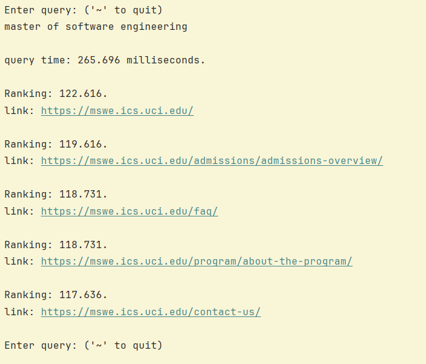

2024 - 2025
search engine : april - june 2024
most recent branch is 'streamlit-main'
I and 3 other developers made a search engine!
Cool, right? To summarize, the engine worked by reverse indexing websites already scraped from the university's CS department. Tokens were gathered from webpages and ranked to determine relevance when returning results.
I worked on the ranking portion and decided on using cosine similarity to compare tokens/key words. Websites were made multi-dimensonal as vectors that had angles based on tokens on the site. Search queries also were vectors. The website vectors closest to the query vectors are returned.
Some problems we ran into included:
not knowing Git/Github. This was huge as I had to learn how to set up pull requests and developer branches as our commit history got really messy without it. It also helped prevent frustration due to overriding the commits of others.
edge case/similar searches like "ICS33" and "ICS 33" or "software engineering" and "master of software engineering". Breaking tokens up in multiple ways helped make more accurate vectors for cosine similarity. Some keywords were also hardcoded to boost higher rankings for certain websites. That could be used for SEO xD!
nonsensical searches like "ASKJHDAIYS12342$@#!". These delayed search time so we added an upper limit for how many comparisons we did.
Unfortunately, it costs money to host the Python backend, but here are example searches below.
  